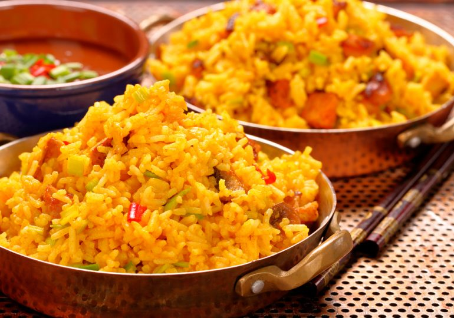

Arroz con Pollo

Description
I grew up in the Canal Zone and sancocho is a must for large family meals. Sancocho is a Latin chicken soup with cilantro and yuca (or cassava). Keep in mind, there are a variety of recipes out there this is just the one my nanny used to make us.
Ingredients
- 9 cups water
- 1 whole chicken
- 2 plantains, peeled and cut into 2-inch pieces
- 1 onion, chopped
- ½ cup chopped fresh cilantro
- 5 cloves garlic, chopped
- 1 ½ teaspoons salt
- 3 pounds yuca (cassava) roots, peeled and cut into 1-inch cubes
- 6 small red potatoes, quartered
- 1 (15.25 ounce) can corn, drained
Steps
Step 1
- Combine water, chicken, plantains, onion, cilantro, garlic, and salt in a large pot. Bring to a boil. Reduce heat to medium; cook until chicken is longer pink at the bone and the juices run clear, about 45 minutes. An instant-read thermometer inserted into the thickest part of the thigh, near the bone should read 165 degrees F (74 degrees C).
Step 2
- Remove the chicken and let cool. Add yuca, potatoes, and corn to the soup; cook over medium heat until yuca and potatoes are softened, about 30 minutes.
Step 3
- Discard chicken skin and bones. Place meat back into the soup; stir to combine.
Go back.